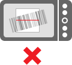
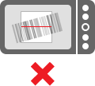
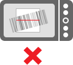

Штрих коды непрерывно сканирует площадь области, показанной на экране - просто линия телефона, чтобы штрих-код полностью внутри видоискателя прямоугольника:

1D штрих-кодов как найденные на продукты требуют телефону с автофокусом. Без него, только QR-коды и коды Data Matrix будет развертываемых.
Если штрих-код считывается, звуковой сигнал будет играть, и вы увидите результаты проверки, описание того, что штрих-код содержит и варианты принятия решений по содержанию.
Если у вас возникли проблемы сканирования, убедитесь, что держать телефон постоянно. Если фотокамера не может сфокусироваться, попробуйте переместить телефон дальше или ближе от штрих-кода.
Перевод Google Translate.